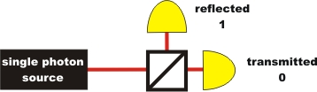

Quantum Cryptography Chapter 1:
Encoding with the One-Time-Pad
Data transmission is nowadays usually
carried out in digital form. Digital news consist of the binary digits
1 and 0. Each letter of a message is initially fractionalised into
binary digits, then transmitted via the internet and finally displayed
again as a letter to the receiver. A spy could intercept this binary
message, read it and forward it to the real receiver. The receiver has
no control whatsoever over whether the message has already been read or
even manipulated.
On the following page, we present a cryptography system which is 100%
secure, provided all rules are observed. This system does not have
anything to do with quantum physics as yet. Quantum physics are needed
later, when the secret code is to be generated absolutely
coincidentally and transferred absolutely safely.
Basics of the One-Time-Pad
In order to transmit a message securely, the sender as well as the receiver need a secret key code. The sender encodes the message with the secret key code. The encoded message is then transmitted publicly, e. g. via the internet. The receiver decodes the encoded message with his own secret key code, and thus gets the real message. Although a spy can intercept the encoded message unnoticed, he lacks the secret key code that is needed to decypher the message.
So as to transmit a message securely, the sender (Alice) and the receiver (Bob) of the message both need an exactly identical but secret key code. For digital transmission, this code and the real message must be both binary and the code must consist of random numbers made up of 1 and 0. Alice and Bob must initially meet in person and without witnesses in order to generate the secret key code and copy it for each one of them. It is only when Alice and Bob are in possession of the secret code that the actual encoding and transmission of the confidential message can begin. For the encoding, the real message is added binarily to the code. For binary addition, the following four calculation rules apply:
The encoded message is then transmitted publicly and readable for everyone, e. g. on a postcard or via the internet. A spy cannot get any useful information from the message without the code. At the receiver's end, the encoded text is added binarily to the identical code, and thus the receiver gets the real message:
In the following animation, the encoding system is shown in more detail using an example. In this example, a message is encoded, transmitted and decoded by the receiver with 5 Bits. 5 Bits are enough to transmit 32 different figures or characters. This number is sufficient e. g. for the alphabet: A: 00000, B: 00001, C: 00010, D: 00011, E: 00100, F: 00101, G: 00111, H: 01000, ....
The secret code in the One-Time-Pad:
The cryptography system described above was developed in 1918 by the cryptologist G. Vernam and called the "One-Time-Pad": The key code is generated and only written down on two pads for Alice and Bob. Each page with the code can only be used once. In times of the Cold War, the key codes were printed on small pads and sent on by messengers. If the messenger did not arrive at his destination, the "enemy" had only got hold of the key code. As this code had nothing to do with the real message, it was of no value to the "enemy". The real message was then encoded with a different code. The obvious danger of this method lies in the possibility that the code could be copied unnoticed by the messenger while he was on his way. If and when that happened, the encoded message could be decoded.
The One-Time-Pad system is 100% secure [Sha49], if the following requirements concerning the key code are met::
Which requirements can be met so far?
For requirement 1, the sender and the receiver are equally responsible. Each key code must be destroyed immediately after one-time use so that it cannot be used again. Requirement 2 can be complied with by the sender. He must only encode a message if he has sufficient code bits at his disposal.
For Requirement 3, random numbers are needed in order to generate the code. Random numbers can e. g. be created with the help of a computer. This computer randomness is, however, generated via a calculation. The basis for this calculation is a start value which recurs infrequently. The "randomness" of the computer figure therefore only depends on the complexity of the calculation rule and on the start value. Computer-generated random numbers are therefore called "pseudo random" and are not suitable for the completely random generation of a code.
Real random numbers can be generated with the aid of quantum physics. If a single photon hits a beam splitter, it is either reflected (binary 1) or transmitted (binary 0) completely at random (pic. 1). There is no mathematical rule behind this process. Such a quantum random generator is described in detail with experiments in the chapter Quantum random.

pic. 1: quantum random generator with announced single photon source
With the quantum random generator, requirement 3 can be met. Now, the random generated codes must be distributed to the sender and the receiver in a manner that ensures it is definitely only known to these two persons (requirement 4). With messengers, security is inevitably breached. Quantum physics again offers the ideal solution [forward].
To chapter 2: Code distribution with single photons (school level)
Back to Overview
Author: P. Bronner, August 2008
Translation: G. Murphy